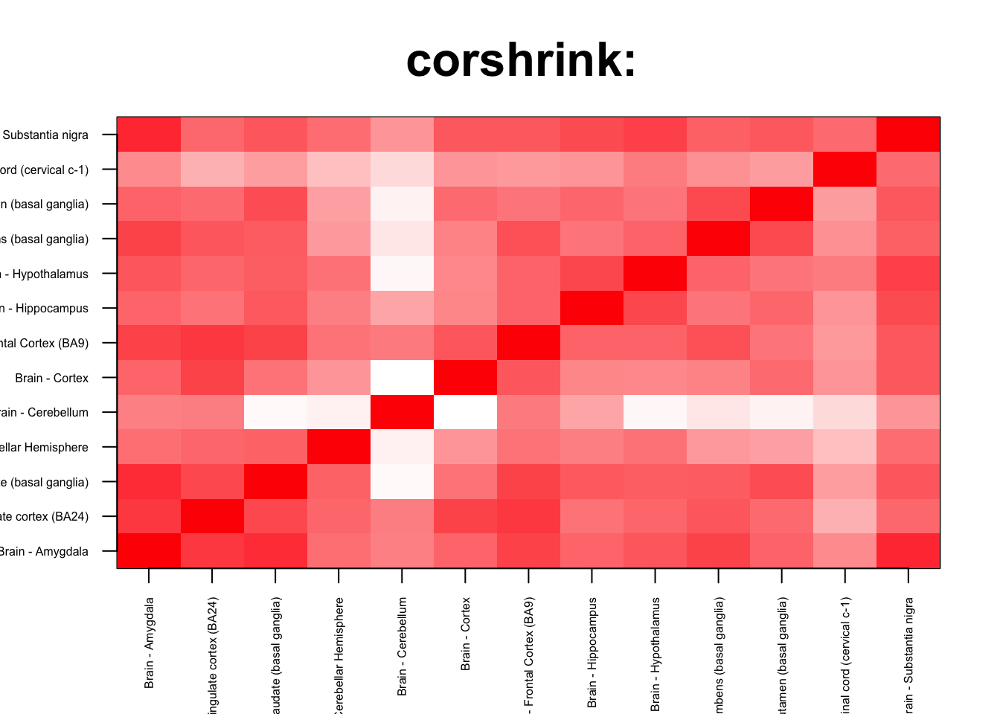
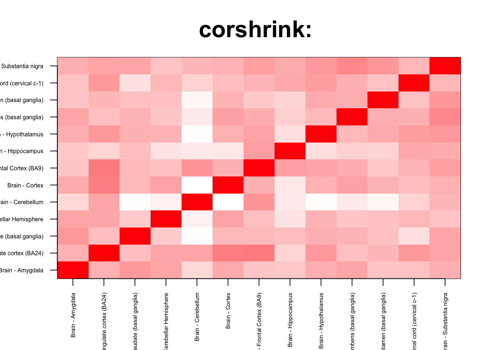

We check for enrichment analysis inside the brain
corshrink_data <- get(load("../output/genewide_ash_out_tissue_mat.rda"))
cor_data <- get(load("../output/cor_tissues_non_ash_voom_pearson.rda"))common_samples <- get(load("../output/common_samples.rda"))
tissue_labels <- read.table(file = "../data/GTEX_V6/samples_id.txt")[,3]
#library(data.table)
#data <- data.frame(fread("../data/GTEX_V6/cis_gene_expression.txt"))
#matdata <- t(data[,-c(1,2)])
gene_names <- as.character(read.table(file = "../data/GTEX_V6/gene_names_GTEX_V6.txt")[,1])
gene_names_1 <- as.character(sapply(gene_names, function(x) return(strsplit(x, "[.]")[[1]][1])))
U <- unique(tissue_labels)tab <- array(0, dim(corshrink_data)[3])
for(m in 1:dim(corshrink_data)[3]){
temp <- corshrink_data[order_index[1:13], order_index[(1:13)],m]
tab[m] <- (quantile(temp[row(temp) > col(temp)], 0.5))
}
ordering_high <- order(tab, decreasing = TRUE)[1:1000]
ordering_low <- order(tab, decreasing = FALSE)[1:1000]top_gene <- gene_names_1[ordering_high[1]]
col=c(rev(rgb(seq(1,0,length=1000),1,seq(1,0,length=1000))),
rgb(1,seq(1,0,length=1000),seq(1,0,length=1000)))
image(as.matrix(corshrink_data[order_index[1:13],order_index[1:13], ordering_high[1000]]),
col=col, main=paste0("corshrink: "), cex.main=2,
xaxt = "n", yaxt = "n", zlim=c(-1,1))
axis(1, at = seq(0, 1, length.out = 13), labels = U[order_index[1:13]], las=2, cex.axis = 0.5)
axis(2, at = seq(0, 1, length.out = 13), labels = U[order_index[1:13]], las=2, cex.axis = 0.5)
bottom_gene <- gene_names_1[ordering_low[10]]
col=c(rev(rgb(seq(1,0,length=1000),1,seq(1,0,length=1000))),
rgb(1,seq(1,0,length=1000),seq(1,0,length=1000)))
image(as.matrix(corshrink_data[order_index[1:13],order_index[1:13], ordering_low[1000]]),
col=col, main=paste0("corshrink: "), cex.main=2,
xaxt = "n", yaxt = "n", zlim=c(-1,1))
axis(1, at = seq(0, 1, length.out = 13), labels = U[order_index[1:13]], las=2, cex.axis = 0.5)
axis(2, at = seq(0, 1, length.out = 13), labels = U[order_index[1:13]], las=2, cex.axis = 0.5)
high_inside_brain_2_genes <- gene_names_1[ordering_high]
low_inside_brain_2_genes <- gene_names_1[ordering_low]
write.table(cbind.data.frame(high_inside_brain_2_genes), quote = FALSE, file = "../utilities/inside_brain_2/high_inside_brain_2.txt", row.names = FALSE, col.names = FALSE)
write.table(cbind.data.frame(low_inside_brain_2_genes), quote = FALSE, file = "../utilities/inside_brain_2/low_inside_brain_2.txt", row.names = FALSE, col.names = FALSE)tab <- read.delim("../utilities/inside_brain_2/pathway_high.tab")
head(cbind.data.frame(tab$pathway, tab$q.value), 100)## tab$pathway
## 1 Immune System
## 2 Legionellosis - Homo sapiens (human)
## 3 TNF signaling pathway - Homo sapiens (human)
## 4 Validated transcriptional targets of AP1 family members Fra1 and Fra2
## 5 Attenuation phase
## 6 HSF1 activation
## 7 Antigen processing and presentation - Homo sapiens (human)
## 8 Influenza A - Homo sapiens (human)
## 9 Staphylococcus aureus infection - Homo sapiens (human)
## 10 Neutrophil degranulation
## 11 HSF1-dependent transactivation
## 12 Herpes simplex infection - Homo sapiens (human)
## 13 Pertussis - Homo sapiens (human)
## 14 Allograft Rejection
## 15 HTLV-I infection - Homo sapiens (human)
## 16 Epstein-Barr virus infection - Homo sapiens (human)
## 17 Spinal Cord Injury
## 18 Th17 cell differentiation - Homo sapiens (human)
## 19 AP-1 transcription factor network
## 20 IL6-mediated signaling events
## 21 Photodynamic therapy-induced unfolded protein response
## 22 Leishmaniasis - Homo sapiens (human)
## 23 Cellular response to heat stress
## 24 Innate Immune System
## 25 Oncostatin M Signaling Pathway
## 26 Photodynamic therapy-induced NF-kB survival signaling
## 27 Osteoclast differentiation - Homo sapiens (human)
## 28 Phagosome - Homo sapiens (human)
## 29 Regulation of HSF1-mediated heat shock response
## 30 Apoptosis Modulation and Signaling
## 31 Apoptosis Modulation and Signaling
## 32 Apoptosis Modulation and Signaling
## 33 Binding and Uptake of Ligands by Scavenger Receptors
## 34 Graft-versus-host disease - Homo sapiens (human)
## 35 Inflammatory bowel disease (IBD) - Homo sapiens (human)
## 36 Nuclear Receptors Meta-Pathway
## 37 Cellular response to heat stress
## 38 Hematopoietic cell lineage - Homo sapiens (human)
## 39 ATF6-alpha activates chaperone genes
## 40 Type I diabetes mellitus - Homo sapiens (human)
## 41 Rheumatoid arthritis - Homo sapiens (human)
## 42 Tacrolimus/Cyclosporine Pathway, Pharmacodynamics
## 43 NF-kappa B signaling pathway - Homo sapiens (human)
## 44 Senescence and Autophagy in Cancer
## 45 Cellular responses to stress
## 46 Vitamin B12 Metabolism
## 47 AGE-RAGE signaling pathway in diabetic complications - Homo sapiens (human)
## 48 Glucocorticoid receptor regulatory network
## 49 MAPK signaling pathway - Homo sapiens (human)
## 50 Chagas disease (American trypanosomiasis) - Homo sapiens (human)
## 51 Apoptosis - Homo sapiens (human)
## 52 Type II interferon signaling (IFNG)
## 53 Allograft rejection - Homo sapiens (human)
## 54 Transcriptional misregulation in cancer - Homo sapiens (human)
## 55 MAPK Signaling Pathway
## 56 IL6
## 57 VEGFA-VEGFR2 Signaling Pathway
## 58 NOD-like receptor signaling pathway - Homo sapiens (human)
## 59 Thymic Stromal LymphoPoietin (TSLP) Signaling Pathway
## 60 Folate Metabolism
## 61 JAK STAT MolecularVariation 1
## 62 Oncostatin_M
## 63 Antigen Presentation: Folding, assembly and peptide loading of class I MHC
## 64 Viral myocarditis - Homo sapiens (human)
## 65 Antigen processing-Cross presentation
## 66 Hepatitis C and Hepatocellular Carcinoma
## 67 Complement and coagulation cascades - Homo sapiens (human)
## 68 Complement and Coagulation Cascades
## 69 TNF related weak inducer of apoptosis (TWEAK) Signaling Pathway
## 70 Glucocorticoid Receptor Pathway
## 71 Dengue-2 Interactions with Complement and Coagulation Cascades
## 72 HIF-1 signaling pathway - Homo sapiens (human)
## 73 Tuberculosis - Homo sapiens (human)
## 74 il 6 signaling pathway
## 75 IL12-mediated signaling events
## 76 Direct p53 effectors
## 77 Vitamin D Receptor Pathway
## 78 classical complement pathway
## 79 IL-4 Signaling Pathway
## 80 Lung fibrosis
## 81 IL23-mediated signaling events
## 82 Intestinal immune network for IgA production - Homo sapiens (human)
## 83 Cytokine-cytokine receptor interaction - Homo sapiens (human)
## 84 Complement Activation
## 85 Mammary gland development pathway - Involution (Stage 4 of 4)
## 86 Corticotropin-releasing hormone signaling pathway
## 87 Malaria - Homo sapiens (human)
## 88 BCR
## 89 Microglia Pathogen Phagocytosis Pathway
## 90 Toxoplasmosis - Homo sapiens (human)
## 91 JAK STAT MolecularVariation 2
## 92 Photodynamic therapy-induced AP-1 survival signaling.
## 93 glutathione-mediated detoxification
## 94 IL1 and megakaryocytes in obesity
## 95 Systemic lupus erythematosus - Homo sapiens (human)
## 96 ATF-2 transcription factor network
## 97 Autoimmune thyroid disease - Homo sapiens (human)
## 98 Apoptosis
## 99 Apoptotic Signaling Pathway
## 100 Salmonella infection - Homo sapiens (human)
## tab$q.value
## 1 2.864706e-10
## 2 2.864706e-10
## 3 2.864706e-10
## 4 3.428252e-10
## 5 7.297740e-10
## 6 1.920800e-09
## 7 3.215650e-09
## 8 1.024795e-08
## 9 1.024795e-08
## 10 1.168405e-08
## 11 1.902234e-08
## 12 3.128541e-08
## 13 3.182610e-08
## 14 7.633113e-08
## 15 1.219381e-07
## 16 1.622337e-07
## 17 3.168112e-07
## 18 3.168112e-07
## 19 3.855705e-07
## 20 3.855705e-07
## 21 3.855705e-07
## 22 4.143253e-07
## 23 4.143253e-07
## 24 5.457262e-07
## 25 5.457262e-07
## 26 6.329274e-07
## 27 1.576548e-06
## 28 1.648764e-06
## 29 2.124390e-06
## 30 2.440652e-06
## 31 2.440652e-06
## 32 2.440652e-06
## 33 2.663215e-06
## 34 2.663215e-06
## 35 2.881579e-06
## 36 2.881579e-06
## 37 3.989653e-06
## 38 4.081205e-06
## 39 5.259630e-06
## 40 5.525391e-06
## 41 6.449584e-06
## 42 6.957546e-06
## 43 1.193724e-05
## 44 1.442922e-05
## 45 1.839283e-05
## 46 3.635304e-05
## 47 3.684184e-05
## 48 4.398749e-05
## 49 4.468522e-05
## 50 5.281589e-05
## 51 5.835947e-05
## 52 6.295444e-05
## 53 6.295444e-05
## 54 6.295444e-05
## 55 7.452992e-05
## 56 7.644346e-05
## 57 7.806901e-05
## 58 7.806901e-05
## 59 8.406779e-05
## 60 8.607588e-05
## 61 8.832606e-05
## 62 9.199989e-05
## 63 9.878230e-05
## 64 1.116373e-04
## 65 1.163125e-04
## 66 1.163125e-04
## 67 1.211303e-04
## 68 1.268445e-04
## 69 1.349414e-04
## 70 1.454573e-04
## 71 1.454573e-04
## 72 1.454573e-04
## 73 1.461879e-04
## 74 1.558390e-04
## 75 1.655196e-04
## 76 2.068650e-04
## 77 2.169975e-04
## 78 2.493920e-04
## 79 2.602257e-04
## 80 2.602257e-04
## 81 3.436295e-04
## 82 4.161039e-04
## 83 4.258934e-04
## 84 4.258934e-04
## 85 5.081852e-04
## 86 5.732138e-04
## 87 5.742832e-04
## 88 5.742832e-04
## 89 6.129408e-04
## 90 6.554713e-04
## 91 6.554713e-04
## 92 6.554713e-04
## 93 7.167883e-04
## 94 7.167883e-04
## 95 7.168566e-04
## 96 7.203935e-04
## 97 8.865250e-04
## 98 8.865912e-04
## 99 8.865912e-04
## 100 8.865912e-04tab <- read.delim("../utilities/inside_brain_2/GO_high.tab")
head(cbind.data.frame(tab$term_name, tab$q.value), 100)## tab$term_name
## 1 response to stress
## 2 defense response
## 3 immune response
## 4 response to cytokine
## 5 response to biotic stimulus
## 6 response to external biotic stimulus
## 7 response to other organism
## 8 cell death
## 9 cellular response to cytokine stimulus
## 10 regulation of immune system process
## 11 response to temperature stimulus
## 12 regulation of cell death
## 13 response to organic substance
## 14 cytokine production
## 15 regulation of response to stress
## 16 cytokine-mediated signaling pathway
## 17 positive regulation of immune system process
## 18 cellular response to chemical stimulus
## 19 immune effector process
## 20 programmed cell death
## 21 apoptotic process
## 22 regulation of cytokine production
## 23 response to lipopolysaccharide
## 24 response to external stimulus
## 25 interferon-gamma-mediated signaling pathway
## 26 response to unfolded protein
## 27 regulation of programmed cell death
## 28 response to molecule of bacterial origin
## 29 innate immune response
## 30 inflammatory response
## 31 response to bacterium
## 32 response to interferon-gamma
## 33 response to heat
## 34 response to topologically incorrect protein
## 35 response to abiotic stimulus
## 36 cellular response to stress
## 37 cellular response to organic substance
## 38 apoptotic signaling pathway
## 39 protein folding
## 40 regulation of response to stimulus
## 41 positive regulation of response to stimulus
## 42 unfolded protein binding
## 43 positive regulation of cytokine production
## 44 regulation of immune response
## 45 regulation of defense response
## 46 regulation of angiogenesis
## 47 response to chemical
## 48 chaperone binding
## 49 defense response to other organism
## 50 regulation of vasculature development
## 51 response to virus
## 52 negative regulation of cell death
## 53 response to inorganic substance
## 54 intrinsic apoptotic signaling pathway
## 55 response to lipid
## 56 positive regulation of biological process
## 57 regulation of response to external stimulus
## 58 MHC protein complex
## 59 blood vessel morphogenesis
## 60 angiogenesis
## 61 negative regulation of biological process
## 62 blood vessel development
## 63 positive regulation of response to external stimulus
## 64 defense response to virus
## 65 positive regulation of immune response
## 66 lumenal side of endoplasmic reticulum membrane
## 67 integral component of lumenal side of endoplasmic reticulum membrane
## 68 type I interferon signaling pathway
## 69 positive regulation of cellular process
## 70 cellular response to biotic stimulus
## 71 cytoplasmic part
## 72 membrane-bounded organelle
## 73 intracellular membrane-bounded organelle
## 74 vasculature development
## 75 peptide antigen binding
## 76 cardiovascular system development
## 77 protein binding
## 78 response to type I interferon
## 79 positive regulation of multicellular organismal process
## 80 cellular response to molecule of bacterial origin
## 81 adaptive immune response based on somatic recombination of immune receptors built from immunoglobulin superfamily domains
## 82 endocytic vesicle
## 83 cellular response to heat
## 84 response to oxygen-containing compound
## 85 cytoplasm
## 86 positive regulation of cell death
## 87 ER-nucleus signaling pathway
## 88 leukocyte mediated immunity
## 89 extrinsic apoptotic signaling pathway
## 90 positive regulation of vasculature development
## 91 positive regulation of defense response
## 92 activation of immune response
## 93 immune system development
## 94 intrinsic apoptotic signaling pathway in response to DNA damage
## 95 response to oxidative stress
## 96 response to cold
## 97 response to reactive oxygen species
## 98 regulation of cellular response to stress
## 99 myeloid leukocyte activation
## 100 positive regulation of leukocyte migration
## tab$q.value
## 1 6.099978e-26
## 2 1.270625e-19
## 3 1.648074e-19
## 4 4.470599e-18
## 5 4.264408e-18
## 6 5.797363e-17
## 7 1.098044e-16
## 8 1.986313e-15
## 9 1.749148e-14
## 10 3.481980e-14
## 11 3.481980e-14
## 12 1.243258e-13
## 13 3.481980e-14
## 14 3.481980e-14
## 15 1.243258e-13
## 16 1.387682e-13
## 17 1.387682e-13
## 18 5.863731e-14
## 19 3.876940e-14
## 20 3.477158e-13
## 21 2.086897e-12
## 22 5.904654e-13
## 23 8.379245e-13
## 24 2.042408e-13
## 25 2.717016e-12
## 26 2.201214e-12
## 27 8.050243e-12
## 28 3.430246e-12
## 29 2.345125e-12
## 30 3.517665e-12
## 31 1.031956e-11
## 32 1.278800e-11
## 33 5.388096e-12
## 34 5.708927e-12
## 35 3.039543e-12
## 36 7.286952e-12
## 37 1.849726e-11
## 38 1.351316e-11
## 39 3.943050e-11
## 40 1.371405e-10
## 41 2.622858e-10
## 42 5.927829e-10
## 43 4.753152e-10
## 44 3.040544e-10
## 45 1.276265e-09
## 46 1.823123e-09
## 47 2.749929e-10
## 48 1.850951e-09
## 49 3.486935e-09
## 50 5.307787e-09
## 51 5.416642e-09
## 52 7.767247e-09
## 53 1.094568e-08
## 54 5.968418e-08
## 55 5.968418e-08
## 56 5.095994e-08
## 57 9.782254e-08
## 58 2.563157e-07
## 59 5.903422e-08
## 60 5.903422e-08
## 61 6.565842e-08
## 62 7.970176e-08
## 63 2.088147e-07
## 64 8.789627e-08
## 65 2.569020e-07
## 66 5.140190e-07
## 67 2.752700e-07
## 68 5.040838e-07
## 69 4.343722e-07
## 70 2.272645e-07
## 71 5.140190e-07
## 72 9.251269e-07
## 73 5.140190e-07
## 74 4.929166e-07
## 75 5.769491e-07
## 76 6.979622e-07
## 77 9.537381e-07
## 78 1.027729e-06
## 79 8.853559e-07
## 80 8.972442e-07
## 81 9.768581e-07
## 82 7.318534e-07
## 83 1.000596e-06
## 84 8.575443e-07
## 85 1.592969e-06
## 86 2.284502e-06
## 87 1.107320e-06
## 88 1.115259e-06
## 89 2.256948e-06
## 90 2.982941e-06
## 91 2.982941e-06
## 92 1.054242e-06
## 93 1.054242e-06
## 94 4.049726e-06
## 95 1.879257e-06
## 96 2.241622e-06
## 97 4.116711e-06
## 98 5.127139e-06
## 99 3.373809e-06
## 100 8.068979e-06tab <- read.delim("../utilities/inside_brain_2/pathway_low.tab")
head(cbind.data.frame(tab$pathway, tab$q.value), 100)## tab$pathway
## 1 Familial lipoprotein lipase deficiency
## 2 Glycerolipid Metabolism
## 3 Glycerol Kinase Deficiency
## 4 D-glyceric acidura
## 5 Transcriptional regulation of white adipocyte differentiation
## 6 Ifosfamide Action Pathway
## 7 Ifosfamide Metabolism Pathway
## 8 Vitamin A and Carotenoid Metabolism
## 9 glycerol degradation
## 10 G13 Signaling Pathway
## 11 Glycerophospholipid metabolism - Homo sapiens (human)
## 12 Adipogenesis
## 13 Ifosfamide Pathway, Pharmacokinetics
## 14 Signaling by TGF-beta Receptor Complex in Cancer
## 15 Visual phototransduction
## 16 Histidine degradation
## 17 Glycerophospholipid metabolism
## 18 Nevirapine Metabolism Pathway
## 19 Cyclophosphamide Action Pathway
## 20 Cyclophosphamide Metabolism Pathway
## 21 retinoate biosynthesis I
## 22 Metabolism of fat-soluble vitamins
## 23 Effects of PIP2 hydrolysis
## tab$q.value
## 1 0.004790852
## 2 0.004790852
## 3 0.004790852
## 4 0.004790852
## 5 0.007136546
## 6 0.014453808
## 7 0.014453808
## 8 0.034404539
## 9 0.131152995
## 10 0.145064858
## 11 0.167785064
## 12 0.167785064
## 13 0.167785064
## 14 0.167785064
## 15 0.167785064
## 16 0.167785064
## 17 0.170922815
## 18 0.177926417
## 19 0.184023164
## 20 0.184023164
## 21 0.184023164
## 22 0.184023164
## 23 0.184023164tab <- read.delim("../utilities/inside_brain_2/GO_low.tab")
head(cbind.data.frame(tab$term_name, tab$q.value), 100)## tab$term_name tab$q.value
## 1 microtubule bundle formation 0.007878489
## 2 contractile fiber part 0.002115240
## 3 contractile fiber 0.005029158
## 4 cilium organization 0.059854568
## 5 cell projection assembly 0.059854568
## 6 sarcomere 0.013609699
## 7 I band 0.013609699
## 8 supramolecular fiber organization 0.128033251
## 9 Z disc 0.018706677
## 10 microvillus assembly 0.126815886
## 11 myofibril 0.020514971
## 12 collagen type V trimer 0.029409420
## 13 cellular developmental process 0.128033251
## 14 heart morphogenesis 0.157146645
## 15 positive regulation of actin filament bundle assembly 0.126815886
## 16 cilium assembly 0.126815886
## 17 heart trabecula formation 0.157146645
## 18 positive regulation of cell-substrate adhesion 0.126815886
## 19 terminal cisterna 0.024038205
## 20 cardiac chamber morphogenesis 0.179951988
## 21 cell differentiation 0.157146645
## 22 convergent extension 0.126932542
## 23 microvillus organization 0.157146645
## 24 cytoskeleton organization 0.157146645
## 25 synaptonemal structure 0.024038205
## 26 ER retention sequence binding 0.149160645
## 27 cardiac chamber development 0.202188389
## 28 sperm principal piece 0.076301721
## 29 condensed nuclear chromosome 0.024038205
## 30 muscle structure development 0.202188389
## 31 actomyosin structure organization 0.214317687
## 32 amyloid fibril formation 0.202188389
## 33 troponin I binding 0.299820940
## 34 isoprenoid binding 0.186920989
## 35 protein complex binding 0.186920989
## 36 extracellular matrix 0.177977975
## 37 response to hydrostatic pressure 0.239969278
## 38 junctional membrane complex 0.090281601
## 39 LINC complex 0.090281601
## 40 alditol catabolic process 0.368649872
## 41 microtubule organizing center attachment site 0.131318693
## 42 regulation of microvillus assembly 0.214317687
## 43 glycerol-3-phosphate metabolic process 0.214317687
## 44 elastic fiber assembly 0.214317687
## 45 regulation of stress fiber assembly 0.214317687
## 46 cilium movement 0.214317687
## 47 channel regulator activity 0.204498415
## 48 epithelial cell differentiation 0.220079034
## 49 alditol phosphate metabolic process 0.371666850
## 50 transforming growth factor beta2 production 0.220079034
## 51 trabecula formation 0.304202520
## 52 centriolar satellite 0.049451032
## 53 supramolecular fiber 0.113554014
## 54 single-organism developmental process 0.257542823
## 55 cardiac ventricle development 0.371666850
## 56 supramolecular polymer 0.196753405
## 57 heart trabecula morphogenesis 0.371666850
## 58 extracellular matrix assembly 0.371666850
## 59 negative regulation of embryonic development 0.253552464
## 60 homotypic cell-cell adhesion 0.371666850
## 61 microvillus 0.146511829
## 62 G1 to G0 transition 0.304202520
## 63 integrin binding 0.299820940
## 64 regulation of actin filament bundle assembly 0.371666850
## 65 cell projection organization 0.304202520This R Markdown site was created with workflowr